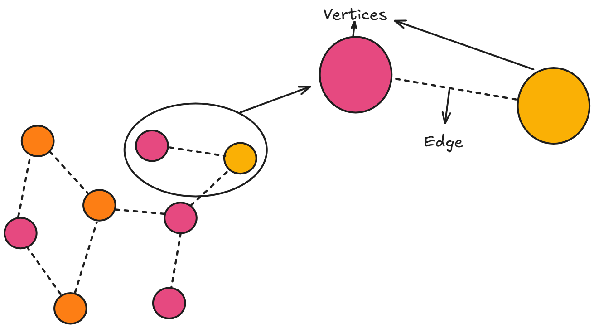
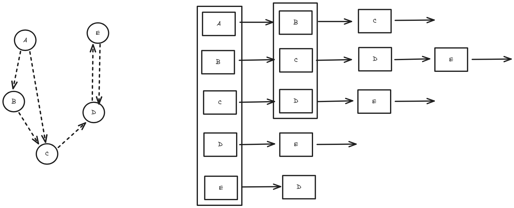
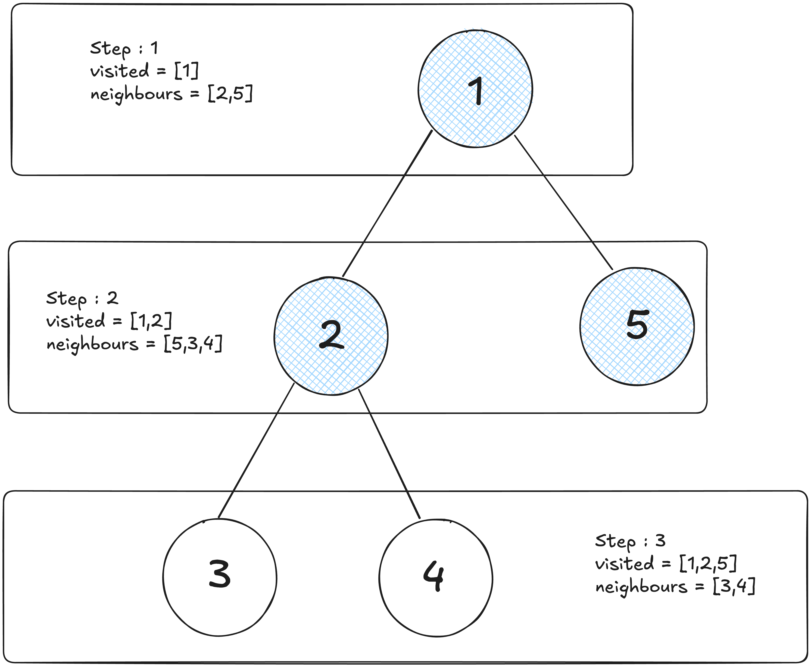

So a graph data structure is like a map of connections, like a bunch of dots that represent stuffs like people, cities or even web pages. Then you've got lines which connects these dots, showing some kind off relationships, like who's friends with who or which cities have direct roads between them.
Unlike linear data structures like arrays or linked lists, graphs represent relationships between entities in way that mirrors how connections are formed. At its core, graph is simply collection of nodes connected by edges. Its like a network where each point represents an entity, and the lines between them represent relationships or connections
Graphs are simple and flexible, every graph consists of just two fundamental components which are vertices and edges. Vertices are the individual data point or nodes that store information, while edges are the connections that define relationships between these vertices.
Taking an example like LinkedIN. Yeahh LinkedIN XDD Each user would be represented as a vertex, containing information like name, age and location. The friendship/connection between users would be represented as edges connecting these vertices. This simple model can represent millions of users and their complex web of relationships
Edges can carry additional information too. In a weighted graph, each edge has numerical value associated with it. For instance we in a road network, vertices might represent cities, and edges might represent roads with weights indicating the distance or travel time between cities. This additional information transforms a simple connection into a rich data relationship.
Now that we understand the basic building blocks, how do we actually store and organize this information in computer memory?
When it comes to storing graphs in computer memory, we have two primary approaches: adjacency matrices and adjacency lists. Each method has its own strengths and is suited for different scenarios, depending on whether the graph is directed or undirected. In a directed graph, edges have a direction, meaning the relationship from vertex A to vertex B is not necessarily reciprocal. In an undirected graph, edges are bidirectional, so an edge between A and B implies a mutual connection..
Adjacency matrices use a 2D array where entry (i,j) indicates whether there's an edge between vertex i and vertex j. For a graph with n vertices, this creates an n×n matrix. In an undirected graph, the matrix is symmetric because an edge from i to j implies an edge from j to i, whereas in a directed graph, the matrix may be asymmetric since edges are one-way. While this approach uses more memory (O(n²) space), it provides constant-time lookup (O(1)) to check if two vertices are connected, making it ideal for dense graphs or when frequent edge queries are needed.
Lets talk about some memory here, For n vertices, adjacency matrices require exactly n² memory locations, regardless of the actual number of edges. With boolean values, this means n²/8 bytes (since booleans can be packed). For a social network with 1 million users, this translates to 125 GB of memory just for the adjacency matrix, even if most users have only a few hundred connections. The memory layout is cache-friendly for row-wise access patterns, but checking all neighbors of a vertex requires scanning an entire row, touching n memory locations regardless of the actual degree.
Adjacency lists, conversely, store a graph by maintaining a list for each vertex, where each list contains the vertices adjacent to it. For an undirected graph, each edge appears in the lists of both vertices it connects, while in a directed graph, an edge from i to j appears only in i's list. This method is more memory-efficient for sparse graphs (O(V + E) space, where V is vertices and E is edges) but requires O(degree(v)) time to check if an edge exists, where degree(v) is the number of neighbors of vertex v.
In adjaceny lists emory usage scales with O(V + E), where V is vertices and E is edges. For our million-user social network with an average of 300 connections per user, this requires only about 2.4 GB of memory - a 50x improvement over adjacency matrices. However, checking if a specific edge exists becomes O(degree) operation, requiring a linear search through the neighbor list. This can be optimized using hash sets instead of vectors for neighbor storage.
With our data properly organized, what can actually do with these graph structures ??
Graph traversal algorithms are the foundation for most graph operations. They allow us to systematically visit every vertex in a graph, forming the basis for more complex algorithms. The two fundamental traversal methods are Depth-First Search (DFS) and Breadth-First Search (BFS).
For new audience (if any, yeah I am delusional) I have explained Depth First Search and Breadth First Search in my previous blog about Algorithms from Beginners POV do check it out. I will be just skimming through the topics here :))
Depth-First Search explores a graph by going as deep as possible along each branch before backtracking. It's like we are exploring a maze by always taking the first available path and only turning back when we hit a dead end. DFS uses a stack (either explicitly or through recursion) to keep track of vertices to visit. This approach is excellent for problems like detecting cycles, finding connected components, or exploring all possible paths.
Breadth-First Search, conversely, explores all vertices at the current depth before moving to vertices at the next depth level. It's like ripples spreading out from a stone dropped in water. BFS uses a queue to ensure vertices are visited in order of their distance from the starting point. This makes it perfect for finding the shortest path in unweighted graphs or for level-order traversals.
These traversal methods sound useful, but how do they help us solve real-world problems like finding the shortest route between two locations?
Finding the shortest path between two points is one of the most practical applications of graph algorithms. While BFS can find the shortest path in unweighted graphs, real-world scenarios often involve weighted edges where we need more sophisticated approaches.
Dijkstra's algorithm is the gold standard for finding shortest paths in weighted graphs with non-negative edge weights. It works by maintaining a set of vertices whose shortest distance from the source is known, gradually expanding this set by always choosing the vertex with the minimum tentative distance. Think of it as simultaneously exploring all possible routes from your starting point, but always prioritizing the most promising paths.
The algorithm maintains a priority queue of vertices to visit, always processing the one with the smallest known distance first. As it visits each vertex, it updates the distances to its neighbors if a shorter path is found. This greedy approach guarantees finding the optimal solution.
For graphs with negative edge weights, the Bellman-Ford algorithm provides a solution, though it's slower than Dijkstra's algorithm. It works by repeatedly relaxing all edges, gradually improving distance estimates until no further improvements are possible.
These algorithms power GPS navigation systems, network routing protocols, and any application where finding optimal paths is crucial.
Shortest paths are fascinating, but what about scenarios where we need to connect multiple points efficiently, like designing a network infrastructure ??
When we need to connect all vertices in a graph with the minimum total cost, we are looking for a Minimum Spanning Tree (MST). This is crucial in network design, where we want to ensure all nodes are connected while minimizing the total cost of connections.
A spanning tree of a graph is a subgraph that includes all vertices and is connected (you can reach any vertex from any other vertex) but contains no cycles. The minimum spanning tree is the spanning tree with the smallest total edge weight.
Kruskal's algorithm approaches this problem by sorting all edges by weight and adding them to the MST one by one, skipping any edge that would create a cycle. It uses a disjoint set data structure to efficiently detect cycles. This greedy approach works because the optimal solution always includes the cheapest available connection that doesn't create redundancy.
Prim's algorithm takes a different approach, starting with an arbitrary vertex and growing the MST by repeatedly adding the cheapest edge that connects a vertex in the MST to a vertex outside it. Both algorithms guarantee finding the optimal solution, but they approach the problem from different angles.
These algorithms are essential in designing telecommunication networks, electrical grids, and any infrastructure where you need universal connectivity at minimum cost.
Directed graphs introduce concepts like in-degree and out-degree (the number of incoming and outgoing edges for each vertex). They also enable topological sorting, which arranges vertices in a linear order such that for every directed edge from vertex A to vertex B, A appears before B in the ordering. This is crucial for scheduling tasks with dependencies.
Network flow problems take directed graphs further by adding capacity constraints to edges. Like a network of pipes where each pipe can only carry a certain amount of fluid. The maximum flow problem asks: what's the maximum amount of flow you can push from a source to a sink?
The Ford-Fulkerson algorithm solves this by repeatedly finding augmenting paths (paths from source to sink with available capacity) and pushing flow along them until no more augmenting paths exist. This approach has applications in traffic management, resource allocation, and even matching problems.
Web search engines model the internet as a massive directed graph where web pages are vertices and hyperlinks are edges. Google's PageRank algorithm uses this graph structure to determine page importance based on the link structure, revolutionizing how we find information online.
After spending so much time with machine learning algorithms and neural network, ml on graphs is an ongoing thing which everyone should once go through, with graph neural networks learning representations directly from graph structure. This opens new possibilities for problems like node classification, link prediction, and graph generation.
This is all from myside on Graphs. Hope I was able to add few value to your today's learning :)